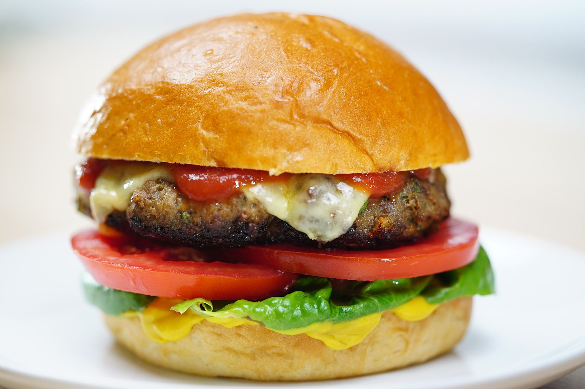

Beef burgers

Description
Perfect for getting the kids cooking, these burgers are fun to make, freeze well and are super tasty too
Ingredients
- 500g pack lean minced beef
- 1 tsp mild chilli powder
- 4 slices mild cheddar
- 4 burger buns
- choice of lettuce, cucumber, gherkin, tomato and red onion
- ketchup or mayonnaise, or both
Steps
- Flavour the meat: Put the meat in a mixing bowl, then sprinkle over the chilli powder and a little salt and
pepper. Mix well with your hands or use a fork. The mild chilli powder gives the meat added flavour without
making it too spicy.
- Shape into burgers: Divide the mixture into 4 equal pieces, then shape with your hands into round burgers
about the width of the buns, or pack the mixture into large presentation rings (if you have them) placed on
a chopping board. You need to press down on the meat to compact it, then carefully lift off the rings - a
bit like making sandcastles.
- Now get cooking: Fry the burgers on a hot griddle or grill them outside on the barbecue for 5 mins on each
side, turning them carefully with a metal spatula. Take care as hot fat from the meat may spit a little.
- Top with cheese and toast the buns: If you want to make cheeseburgers, put a slice of cheese on top of the
burgers when you turn them over and let it melt while the other side cooks. When they are ready, cut the
burger baps in half and warm them in the toaster or on the barbecue - take care that you don't burn them.
- Prepare the toppings: Meanwhile, prepare the toppings of your choice. Separate the lettuce into leaves.
Then, using a sharp knife, thinly slice the tomato, cucumber and gherkin on a separate board to the one you
prepared the burgers on. Peel and finely chop the red onion.
- Assemble and enjoy: Spread a little mayonnaise or ketchup - or both if you like - onto the toasted buns,
then top with your burgers and salads of your choice, followed by the remaining half bun.